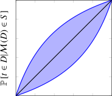
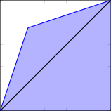
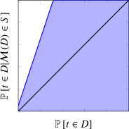
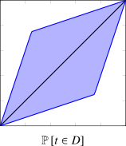

2.2.6 Change in formalism (F)
The definition of differential privacy using -indistinguishability compares the distribution of outputs given two neighboring inputs. This is not the only way to capture the idea that a attacker should not be able to gain too much information on the dataset. Other formalisms have been proposed, which model the attacker more explicitly.
One such formalism reformulates DP in terms of hypothesis testing by limiting the type I and the type II error of the hypothesis that the output of a mechanism originates from (instead of ). Other formalisms model the attacker explicitly, by formalizing their prior belief as a probability distribution over all possible datasets. This can be done in two distinct ways. Some variants consider a specific prior (or family of possible priors) of the attacker, implicitly assuming a limited background knowledge, like in Section 2.2.5. We show that these variants can be interpreted as changing the prior-posterior bounds of the attacker. Finally, rather than comparing prior and posterior, a third formalism compares two possible posteriors, quantifying over all possible priors.
Definitions in this section provide a deeper understanding of the guarantees given by differential privacy, and some of them lead to tighter and simpler theorems on differential privacy, like composition or amplification results.
Hypothesis testing
First, differential privacy can be interpreted in terms of hypothesis testing [213, 385]. In this context, an adversary who wants to know whether the output of a mechanism originates from (the null hypothesis) or (the alternative hypothesis). Calling the rejection region, the probability of false alarm (type I error), when the null hypothesis is true but rejected, is . The probability of missed detection (type II error), when the null hypothesis is false but retained, is .
It is possible to use these probabilities, to reformulate DP: a mechanism is -DP iff for all , and ; or equivalently, iff . Similarly, a mechanism is -DP iff .
This hypothesis testing interpretation was used in [113] to define -differential privacy, which avoids difficulties associated with divergence based relaxations. Specifically, its composition theorem is lossless as it provides a computationally tractable tool for analytically approximating the privacy loss. Moreover, there is a general duality between -DP and infinite collections of -DP guarantees.
Definition 36 (-differential privacy [113]). Let be a convex, continuous, and non-increasing function such that for all , . A privacy mechanism satisfies -differential privacy (-DP) if for all neighboring and all :
Here, is the rejection region; and the infimum is the trade-off function between and . The authors also introduce Gaussian differential privacy (GaussDP) as an instance of -differential privacy, which tightly bounds from below the hardness of determining whether an individual’s data was used in a computation than telling apart two shifted Gaussian distributions.
Changing the shape of the prior-posterior bounds
As we mentioned in Section 2.1.6.0, differential privacy can be interpreted as giving a bound on the posterior of a Bayesian attacker as a function of their prior. This is exactly the case in indistinguishable privacy (IndPr), an equivalent reformulation of differential privacy defined in [260]. Assuming that the attacker is trying to distinguish between options and , where corresponds to the option “” and to “”, we end up with a bound on the posterior probability depending on the prior probability that we derived in Section 2.1.6.0 (Proposition 1)18:
We visualize these bounds on the top-left graph of Figure 2.8.
Some variants of differential privacy use this idea in their formalism, rather than obtaining the posterior bound as a corollary to the classical DP definition. For example, positive membership privacy [254] requires that the posterior does not increase too much compared to the prior. Like noiseless privacy, it assumes an attacker with limited background knowledge.
Definition 37 (-positive membership privacy [254]). A privacy mechanism provides -positive membership privacy (PMPr) if for any distribution , any record and any :
Note that this definition is asymmetric: the posterior is bounded from above, but not from below. In the same paper, the authors also define negative membership privacy (NMPr), which provides the symmetric lower bound, and membership privacy19 (MPr), which is the conjunction of positive and negative membership privacy. They show that this definition can represent differential privacy (in its bounded and unbounded variants), as well as other definitions like differential identifiability [244] and sampling DP [253, 255], which we mention in Section 2.2.10.0. Bounding the ratio between prior and posterior by is also done in the context of location privacy: in [115], authors define -DP location obfuscation, which formalizes the same intuition as membership privacy.
A previous attempt at formalizing the same idea was presented in [326] as adversarial privacy. This definition is similar to positive membership privacy, except only the first relation is used, and there is a small additive as in approximate DP. We visualize the corresponding bounds on the third figure of Figure 2.8.
Definition 38 (-adversarial privacy [326]). An algorithm is -adversarial private (AdvPr) if for all , tuples , and distributions :
Adversarial privacy (without ) was also redefined in [391] as information privacy20.
Finally, aposteriori noiseless privacy is a similar variant of noiseless privacy introduced in [46]; the corresponding bounds can be seen on the last figure of Figure 2.8.
Definition 39 (-aposteriori noiseless privacy [46]). A mechanism is said to be -aposteriori noiseless private (ANPr) if for all , all and all :
We visualize the prior/posterior bounds for these various definitions in Figure 2.8.
|  |  | |
|  |  |
Comparing two posteriors
In [217], the authors propose an approach that captures an intuitive idea proposed by Dwork in [122]: “any conclusions drawn from the output of a private algorithm must be similar whether or not an individual’s data is present in the input or not”. They define semantic privacy: instead of comparing the posterior with the prior belief like in DP, this bounds the difference between two posterior belief distributions, depending on which dataset was secretly chosen. The distance chosen to represent the idea that those two posterior belief distributions are close is the statistical distance. One important difference between the definitions in the previous subsection is that semantic privacy quantifies over all possible priors: like in DP, the attacker is assumed to have arbitrary background knowledge.
Definition 40 (-semantic privacy [158, 217]). A mechanism is -semantically private (SemPr) if for any distribution over datasets , any index , any , and any set of datasets :
A couple of other definitions also compare posteriors directly: inferential privacy [164] is a reformulation of noiseless privacy, and range-bounded privacy [121] (RBPr) requires that two different values of the PLRV are close to each other (instead of being between centered around zero like in -DP). It is equivalent to -DP up to a change in parameters, and is used as a technical tool to prove composition results.
Multidimensional definitions
Definitions that limit the background knowledge of the adversary explicitly formulate it as a probability distribution. As such, they are natural candidates for Bayesian reformulations. In [391], the authors introduce identity DP, which is an equivalent Bayesian reformulation of noiseless privacy. Another example is inference-based causal DP, which we define in Definition 52 in Section 3.1.2.0. It is similar to aposteriori noiseless DP, except it uses causal DP instead of noiseless DP.
Further, it is possible to consider different definitions of neighborhood. In [119], authors introduce information privacy21, which can be seen as a posteriori noiseless privacy combined with free lunch privacy: rather than only considering the knowledge gain of the adversary on one particular user, it considers its knowledge gain about any possible group of values of the dataset.
Definition 41 (-information privacy [119]). A mechanism satisfies -information privacy (InfPr) if for all probability distributions , all and all , .
The authors further prove that if contains a distribution whose support is , then -InfPr implies -DP.
Apart from the hypothesis testing reformulations, which can be used to improve composition and amplification results, the definitions in this section mostly appear in theoretical research papers, to provide a deeper understanding of guarantees offered by DP and its alternatives. They do not seem to be used in practical applications.
18Note that the original formalization used in [260] was more abstract, and it used polynomially bounded adversaries, which we introduce in Section 2.2.8.
19Another definition with the same name is introduced in [336], we mention it in Section 2.2.1.0.
20Another definition with the same name is introduced in [119], we mention it later in this section.
21Another definition with the same name is introduced in [391], we mention it earlier in this section.